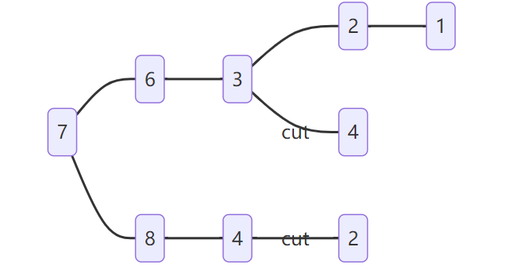

397. 整数替换
给定一个正整数
n，你可以做如下操作：
- 如果
n是偶数，则用n / 2替换n。- 如果
n是奇数，则可以用n + 1或n - 1替换n。n变为1所需的最小替换次数是多少？输入：n = 7 输出：4 解释：7 -> 8 -> 4 -> 2 -> 1 或 7 -> 6 -> 3 -> 2 -> 1
方法一：·普通递归算法
class Solution {
public:
int integerReplacement(int n) {
if (n == 1) {
return 0;
}
if (n % 2 == 0) {
return 1 + integerReplacement(n / 2);
}
return 2 + min(integerReplacement(n / 2), integerReplacement(n / 2 + 1));
}
};
方法二：记忆化递归
记忆化递归使用多余的内存空间来换取较短的递归时间
实现 递归树剪枝

class Solution {
private:
unordered_map<int, int> memo;
public:
Solution(){
memo.push({0,1});
}
int integerReplacement(int n) {
if (n == 1) return 0;
if (memo.count(n)) return memo[n];
if (n % 2 == 0) return memo[n] = 1 + integerReplacement(n / 2);
return memo[n] = 2 + min(integerReplacement(n / 2), integerReplacement(n / 2 + 1));
}
};
//case 1: n 为 1 直接返回
//case 2: n 已知 直接返回
//case 3: n 为偶数 递归一次 并记忆
//case 4: n 为奇数 递归两次 并记忆